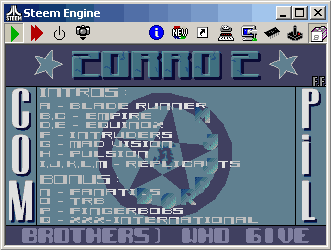

Ah
les intros des groupes de crackeurs/déplombeurs !
Des disquettes bourrées à cracker de jeux et de logiciels en tout
genre.
Tous les grands groupes y sont passés, même les plus prestigieux
comme les
Overlanders, Hotline, Equinox, The Carebears...
Je vous invite à regarder quelques échantillons sous forme de
captures
d'écrans à travers les émulateurs STEEM, SAINT et WINSTON.
Chaque image est optimisée en 382*268 pour une meilleur visibilitée
mais leurs poids atteignent parfois les 30 Ko...
Certains écrans sont inclus dans une compile
unique d'intros qui est téléchargeable en bas de la page.
Voici la liste des groupes de crackeurs :

Cliquer sur l'image
...